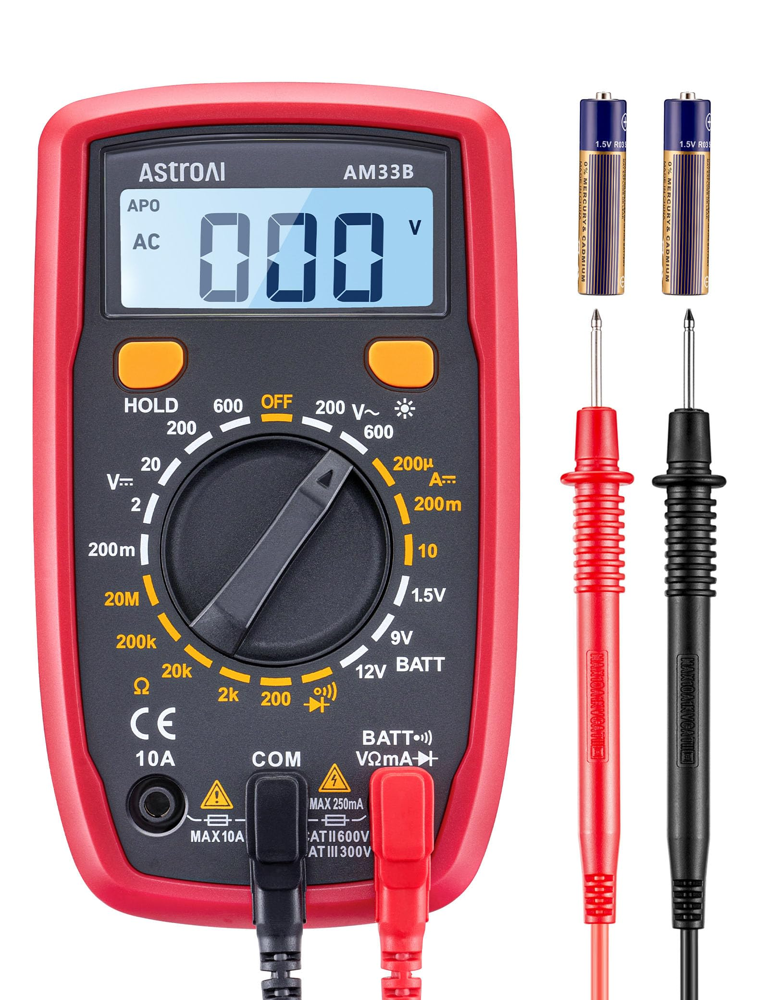
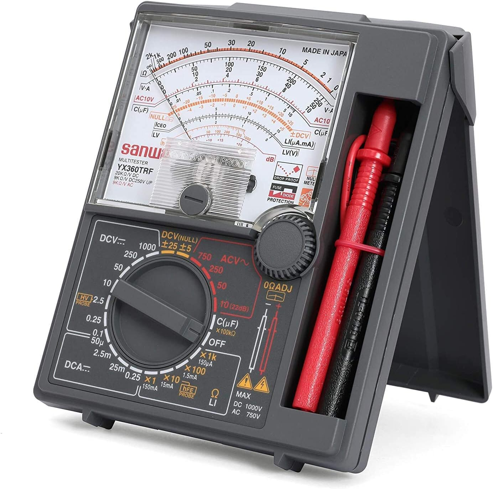
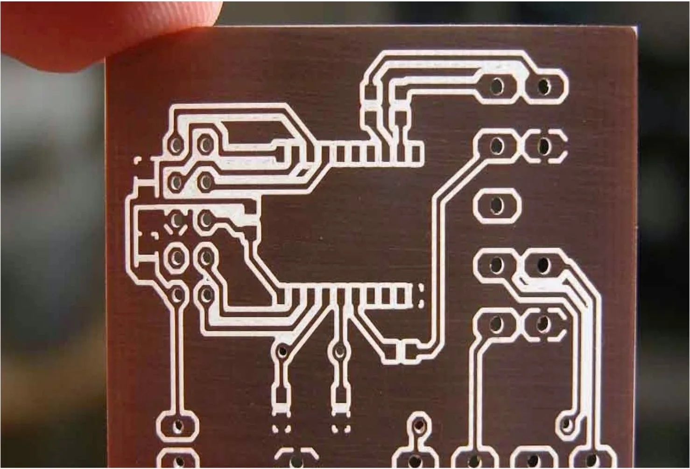
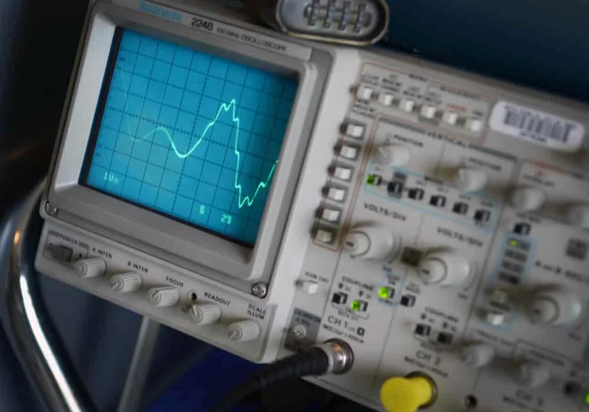
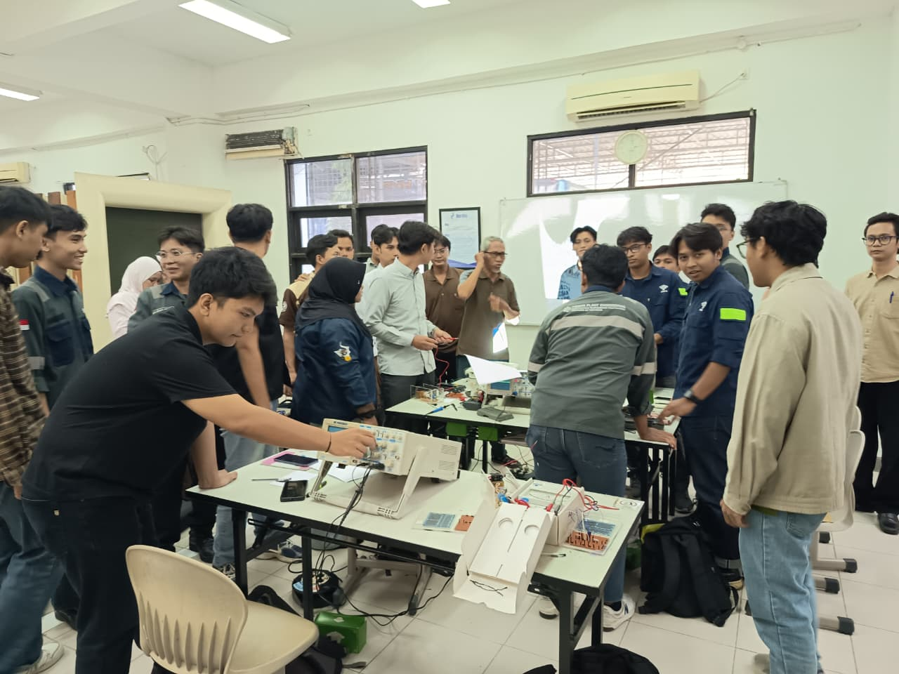
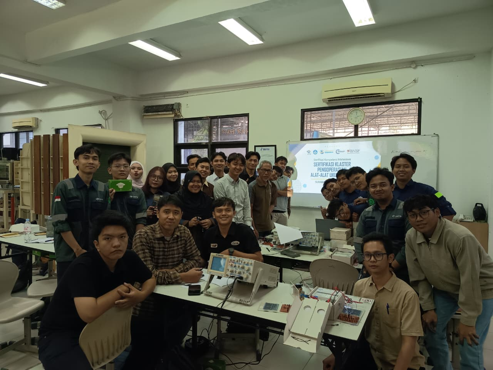

Electrical Measurement
Training & Certification
This training and certification program was designed
to provide both
theoretical knowledge and practical skills in using various electrical measuring
instruments accurately, safely, and in accordance with industrial standards.
19–21 Mei 2025
Lab SCADA
PENS Surabaya
Politeknik Elektronika Negeri Surabaya
Program Overview
The Electrical Measurement Training and Certification program focuses on developing practical competencies in using a wide range of electrical measuring instruments to measure voltage, current, resistance, power, frequency, and electrical signal characteristics.
Throughout the program, participants learned the operating principles of electrical measuring instruments, proper measurement techniques, laboratory safety procedures, data interpretation, and gained hands-on experience using various laboratory equipment.

Skills Acquired

Digital Multimeter
Performed measurements of AC/DC voltage, current, resistance, continuity, and diode testing using a digital multimeter.

Analog Multimeter
Performed measurements of AC/DC voltage, current, resistance, continuity, and diode testing while learning to accurately interpret analog meter readings.

Electrical Circuits
Learned the functions, working principles, and applications of various electrical components within electrical circuits.

Oscilloscope
Observed waveform characteristics, including amplitude, frequency, signal period, and waveform behavior using an oscilloscope.
Training Results and Certifications
Gallery


